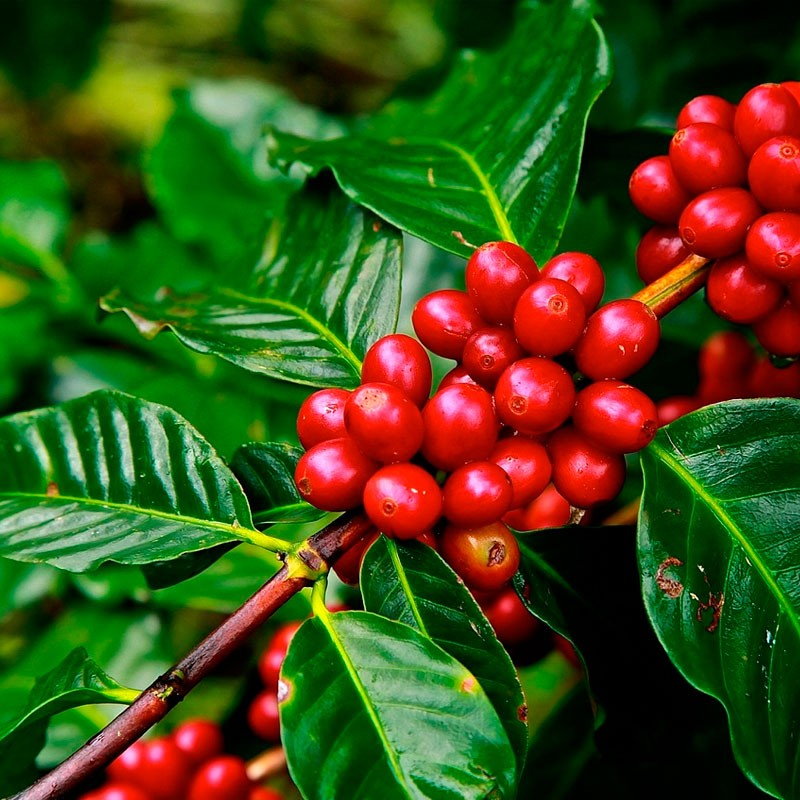
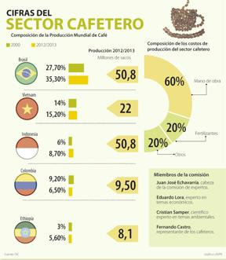

Principal

El café es la bebida que se obtiene a partir de los granos tostados y molidos de los frutos de la planta del café (cafeto). Es una bebida altamente estimulante por su contenido de cafeína. Suele tomarse durante el desayuno, después de éste o incluso como único desayuno, aunque también se acostumbra tomarlo después de las comidas o cenas, para entablar conversaciones o sólo por costumbre. Es una de las bebidas sin alcohol más socializadoras en muchos países. Las formas más populares de tomarlo son negro y con leche (con o sin azúcar); también se le suele añadir crema o nata, leche condensada, chocolate o algún licor, dependiendo de la receta hay diversas formas de prepararlo
El cafeto es originario de la provincia de Kaffa en las tierras altas de Abisinia, actual Etiopía, en donde crece de forma silvestre.1 Las cualidades energéticas del café ya eran conocidas por la tribu Galla de Etiopía en el siglo XI, quienes lo mezclaban con grasa animal.2 Posteriormente sería introducido a Arabia, de donde se expandiría al resto del mundo con el dominio turco de Anatolia.
Actualmente, la planta se cultiva principalmente en países tropicales y subtropicales. Brasil concentra poco más de un tercio de la producción mundial. Los granos del café son uno de los principales productos de origen agrícola que se comercializan en los mercados internacionales y a menudo supone una gran contribución a los rubros de exportación de las regiones productoras.
La estadística del café estima en 125 millones el número de personas que vive del cultivo del café, incluyendo 25 millones de pequeños productores. Cada año se beben 400 000 millones de tazas de café. Por tanto, en juego hay muchos intereses económicos y sociales extremadamente importantes. Respecto al café, la unidad de medida es la bolsa de 60 kg (en Colombia la medida son sacos de 70 kg). La producción mundial es superior a 100 millones de bolsas desde hace varios años (120 millones en 2002, 102 millones en 2003). De esta producción, se exportan más de 80 millones de bolsas cada año (88 millones en 2002, 84 millones en 2003). Los mayores exportadores del café son los sudamericanos. Colombia, Brasil y Honduras han exportado, desde hace décadas, millones de toneladas de éste producto a todo el mundo. Dicen que de cada 10 hogares del mundo en los que se consume café en 9 de ellos el café proviene de América Latina más específicamente de América del Sur, específicamente de Colombia, Venezuela, Brasil, Perú y Ecuador